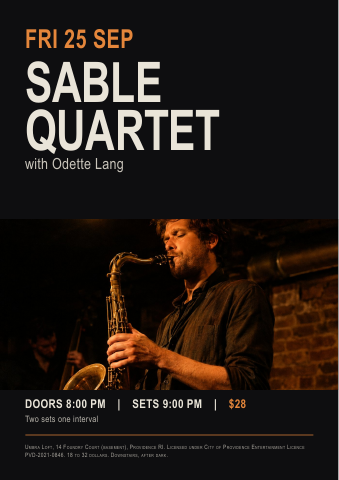

All pilot tasks · Brief · Human verifiers · Auto verifiers · Trajectory verifiers
Umbra Loft - After Dark event campaign
Client brief
After Dark: a coherent poster and social campaign from six different nights
Umbra Loft's autumn programme needs to feel like a series, even though our six usable archive photographs were shot under six different lighting rigs. We want a strong two-colour and grain treatment that actually lives in the images, not a collection of unrelated pictures behind matching text.
Deliverables
1. After Dark poster direction: 3 files. The billing order follows the supplied list, and each poster direction bills every night of the autumn series with its date; every act name is typeset in the series type, and a supplied production wordmark, for Sable Quartet or Meridian Brass, appears with it rather than in place of it. The event information is readable.
2. Promoter pitch deck: 1 file. The three directions are meaningfully distinct. The sequence explains the series identity, and the deck charts last season's average draw by month from umbra_room_specs.txt.
3. Night release post: 9 files. The date matches this event, and the post carries that night's act, support act, door time, set time and advance price, with one of the six archive photographs in the two-colour and grain treatment; the act name is typeset in the series type, and a supplied production wordmark, for Sable Quartet or Meridian Brass, appears with it rather than in place of it. The advance price is readable.
Treat the nine dates and prices in umbra_nights_autumn.csv as current. Decode 8:00 PM as 8:00 PM. The old seasoncard_img_01.jpg through seasoncard_img_08.jpg identifiers are not supplied source photographs: choose from umbra_archive_night_01.jpg through umbra_archive_night_06.jpg, without implying that a pictured performer is a named act. The three poster files are A2 approval proofs, not press masters. Use the billing file's accessibility and licence lines on these poster proofs.
Supplied identity artwork
umbra_sable_wordmark_transparent.png and umbra_meridian_wordmark_transparent.png are refreshed production artwork. Use these supplied shapes; recolour their ink to Bone White for Pitch grounds. Merchandise photos are historical references only. The file named umbra_wordmark_nightferry.jpg actually shows Sable Quartet: it must not represent Night Ferry. Night Ferry is billed in the series type only, with no invented wordmark.
What stays fixed
Keep the approved billing order, all nine dates, support acts, times and CSV prices. Use the current palette and supplied fonts. Sable Quartet and Meridian Brass have supplied production wordmarks; Night Ferry and the remaining acts are type-only.
Your design decisions
Develop three genuinely different type-led, image-led and graphic-led poster directions. Choose the two-colour photographic pair and grain treatment within the palette, then choose one direction to adapt consistently to the nine release posts. Explain that choice in the deck. Choose the three poster headliner sizes above 48 pt; the remaining poster act names stay at 48 pt.
Delivery and fonts
Use the placement and export instructions listed with each requested file below. The downloadable OFL fonts in Source assets are the current typefaces for this commission; the typography card gives their roles and weights.
Brand identity
Umbra Loft
Umbra Loft is a two hundred and fifty capacity basement room under an old mill in Providence, programming jazz and after dark nights for a crowd that finds us through friends and phones at eleven at night. This autumn we are running nine nights as one series rather than nine separate shows. It has to look like one thing, and it has to look like the room it actually is: dark, close and made by hand.
Audience
A scene literate, discovery driven crowd aged twenty one to thirty five, reached almost entirely on a phone late at night, who read polish as inauthentic and reward work that plainly comes from the room.
Positioning
Tickets 18 to 32 dollars, capacity 250. Independent basement scale: deliberately made and high contrast, credible at a headline ticket without ever reading as corporate or sponsored programming.
Palette
Pitch
#0E0E10 mandatoryThe main ground of every poster, post and deck page, and always the solid ground under an act block (type rule: Bone White on Pitch), as on umbra_seasoncard_autumn.pdf. Never type.Ash
#2A2A2E optionalA secondary solid panel only, such as the frame behind a photograph on umbra_seasoncard_autumn.pdf, or behind a table or chart in the deck. Never type and never the ground under an act block.Sodium
#E4863B mandatory for every date lineThe date line directly above each act block (type rule and step 02), as on umbra_seasoncard_autumn.pdf; it may also set the advance price and hairline rules, as that card does. Never a ground or a panel.Cold Signal
#3F7C8C optional accentHairline rules, dividers and chart marks, or one of the two colours of a photograph's treatment. Never type, a ground or a panel.Bone White
#E9E4D8 mandatoryEvery act name (type rule: Bone White on Pitch), and every other line of type apart from the Sodium date line and advance price: titles, headings, support, door, set, body, billing, table and fine-print lines, as on umbra_seasoncard_autumn.pdf. Never a ground or a panel.Blood
#8E2B24 optional accentHairline rules, dividers and chart marks, or one of the two colours of a photograph's treatment. Never type, a ground or a panel.Colour rules
- Distribution
- Grounds and panels are Pitch or Ash and nothing else; Pitch is the main ground and always the ground under an act block. Every act name is Bone White on Pitch with its date line directly above it in Sodium, as the type rules require. Every other line of type, titles, headings, support, door, set, body, billing, table and fine-print lines included, is Bone White; the advance price may be Sodium, as on umbra_seasoncard_autumn.pdf. Pitch and Ash are never type. Cold Signal and Blood are accents for hairline rules, dividers and chart marks only, together no more than 5% of the designed, non-photographic area, never type, a ground or a panel. Any palette colour may be one of the two colours of a photograph's treatment. Supplied production act wordmarks are recoloured to Bone White on Pitch; their letter shapes remain unchanged.
- Opacity
- Every palette colour is used solid, at 100% opacity, for type, grounds, panels, rules, chart marks and recovered act wordmarks: no tint, transparency, gradient, shadow, glow or blend mode, and no scrim, gradient or overlay of any colour, black and white included, laid over a photograph. The translucent type and rule of last season's umbra_seasoncard_autumn.pdf (printed at 86%, 78%, 70% and 55% opacity) are not carried over. The one place two palette colours mix is inside a photograph, in its two-colour treatment. Supplied raster identity artwork retains its edge anti-aliasing. Place it at 100% layer opacity; colour rules apply to any intentional recolouring.
- Not allowed
- No colour outside the six palette hexes for type, grounds, panels, rules, chart marks, icons or recovered act wordmarks; a recovered act wordmark takes one solid palette colour. No sponsor logo or corporate partner mark, since the type rules forbid anything that reads as corporate or sponsored programming.
- Photography
- Every photograph carries the series two-colour and grain treatment: rendered in two palette colours with visible grain, never in full colour, and the nine night release posts share one pair so six different rigs read as one series. Photographs are used as shot, with nothing generated, extended, added or painted in.
Typography
// Type system
Umbra Loft
Downstairs, after dark.
Aa
Sora
Aa
Archivo Narrow
The samples load the supplied font files. Their display size is reduced for this guide; use the stated deliverable settings, not the on-screen sample size. Fonts and their OFL licences are downloadable in Source assets.
Apply these roles to newly set text in the requested deliverables. Preserve supplied logo artwork rather than retyping it. Recovered artwork retains its photographed lettering.
Tracking in units means thousandths of an em; 1 pt is 1/72 inch. Pixel settings apply at final exported size. Font size is not cap height.
Use the attached OFL font files at the named weights. These files replace unavailable commercial fonts for this commission. Do not substitute another family or simulate a missing weight.
01
Series title / headline
UMBRA / LOFT
A2 series title only, not every act in the schedule. Use 96 px for a release-post series title. On A2 posters, Sable Quartet, Meridian Brass and Night Ferry must each be larger than the remaining acts; choose their larger size. Remaining act names are 48 pt. All release-post act names are 76 px. Act names may occupy one or two lines; keep KOA on one line.
02
Date line
DOWNSTAIRS, AFTER DARK.
A2 poster date line above its act. On release posts use 30 px / 36 px.
03
Body
Nine nights, one series, downstairs under the mill.
A2 supporting billing uses 14 pt / 19 pt. Release-post supporting copy uses 28 px / 38 px. Deck body uses 18 pt / 25 pt.
04
Fine print
DOORS 8 · CASH ON THE NIGHT
9 pt / 13 pt for poster licence and access lines. Release posts use at least 22 px / 30 px. SemiBold is reserved for door-time information; other fine print is Regular.
- Act names use one or two lines as needed; KOA stays on one line. Do not apply the 180 pt series-title size to the full billing list.
- The act block is Bone White on Pitch, with the date directly above it in Sodium.
- Archivo Narrow Regular sets billing and tables. SemiBold is reserved for the door line and sets nothing else.
- Sora ExtraBold is display only. It never sets billing, tables or body.
- Everything comes from this room, on these nights. It must never read as corporate or sponsored programming.
Voice
Terse, atmospheric, unvarnished. It names the act, the night and the door and gets out of the way. Example line the brand would write: "Doors 8. Downstairs. Two sets, one room, cash on the night."
Existing brand materials
umbra_sable_wordmark_transparent.png and umbra_meridian_wordmark_transparent.png are refreshed production artwork. Use these supplied shapes; recolour their ink to Bone White for Pitch grounds. Merchandise photos are historical references only. The file named umbra_wordmark_nightferry.jpg actually shows Sable Quartet: it must not represent Night Ferry. Night Ferry is billed in the series type only, with no invented wordmark.
Source assets (19)


UMBRA LOFT — AUTUMN AFTER-DARK SERIES: APPROVED BILLING (as agreed with the acts; credit exactly as written) Three headline nights carry recovered act wordmarks and get the A2 poster directions: 1. SABLE QUARTET — headline, Fri 25 Sep. Credit: 'SABLE QUARTET'. Wordmark supplied as merch photo. 2. MERIDIAN BRASS — headline, Sat 26 Sep. Credit: 'MERIDIAN BRASS'. Wordmark supplied as merch photo. 3. NIGHT FERRY — headline, Fri 2 Oct. Credit: 'NIGHT FERRY' (two words). Wordmark supplied as merch ph
date,headline,support,door,set,price,stage_note,image 2026-09-25,Sable Quartet,Odette Lang,8:00 PM,9:00 PM,$28,Two sets one interval,seasoncard_img_01.jpg 2026-09-26,Meridian Brass,The Tin Ravens,8:30 PM,9:15 PM,$32,"Brass night, late curfew",seasoncard_img_02.jpg 2026-10-02,Night Ferry,Junior Vale,8:00 PM,9:00 PM,$26,Standing room only,seasoncard_img_03.jpg 2026-10-03,The Blue Hour,Coral Sound,8:00 PM,9:00 PM,$24,"Residency, seated",seasoncard_img_04.jpg 2026-10-04,The Blue Hour,Coral Sound,8:0
UMBRA LOFT — ROOM SPECIFICATION (what promoters ask before they will talk) CAPACITY: 250 standing / 120 seated cabaret. ADDRESS: 14 Foundry Court (basement), Providence, Rhode Island, under the former Foundry textile mill. STAGE: 5.2 m wide x 3.0 m deep x 0.4 m high. Low ceiling, 2.4 m clearance over the stage. LOAD-IN: street-level loading door on Foundry Court to a goods lift, then one flight down. No step-free path to the stage itself.

umbra_seasoncard_autumn.pdf
PDF · Source · 241.3 KB


Copyright 2019 The Sora Project Authors (https://github.com/sora-xor/sora-font) This Font Software is licensed under the SIL Open Font License, Version 1.1. This license is copied below, and is also available with a FAQ at: https://scripts.sil.org/OFL
Copyright 2019 The Archivo Narrow Project Authors (https://github.com/Omnibus-Type/ArchivoNarrow) This Font Software is licensed under the SIL Open Font License, Version 1.1. This license is copied below, and is also available with a FAQ at: https://scripts.sil.org/OFL
Requested deliverables (13)
After Dark poster direction
After Dark poster direction - Type-led
poster-direction-type-led.pdfPDF · 420 x 594 mm · 1 page- Purpose: Present this campaign direction for client selection before poster production.
- Placement: A2-size digital approval proof; not a press-ready poster
- Audience: Umbra Loft promoters and the client team
- Show all nine nights and dates in approved billing order, with support acts and the printed-matter accessibility and licence lines.
- Make this file's named direction visibly type-led, image-led or graphic-led. Use the supplied Sable Quartet and Meridian Brass wordmarks alongside their typeset names.
- Export: Digital PDF in sRGB with embedded fonts, searchable text where practical, no crop marks and no added bleed; retain the exact page size and page count. This file is for screen review/distribution, not a CMYK press master.
After Dark poster direction - Image-led
poster-direction-image-led.pdfPDF · 420 x 594 mm · 1 page- Purpose: Present this campaign direction for client selection before poster production.
- Placement: A2-size digital approval proof; not a press-ready poster
- Audience: Umbra Loft promoters and the client team
- Show all nine nights and dates in approved billing order, with support acts and the printed-matter accessibility and licence lines.
- Make this file's named direction visibly type-led, image-led or graphic-led. Use the supplied Sable Quartet and Meridian Brass wordmarks alongside their typeset names.
- Export: Digital PDF in sRGB with embedded fonts, searchable text where practical, no crop marks and no added bleed; retain the exact page size and page count. This file is for screen review/distribution, not a CMYK press master.
After Dark poster direction - Graphic-led
poster-direction-graphic-led.pdfPDF · 420 x 594 mm · 1 page- Purpose: Present this campaign direction for client selection before poster production.
- Placement: A2-size digital approval proof; not a press-ready poster
- Audience: Umbra Loft promoters and the client team
- Show all nine nights and dates in approved billing order, with support acts and the printed-matter accessibility and licence lines.
- Make this file's named direction visibly type-led, image-led or graphic-led. Use the supplied Sable Quartet and Meridian Brass wordmarks alongside their typeset names.
- Export: Digital PDF in sRGB with embedded fonts, searchable text where practical, no crop marks and no added bleed; retain the exact page size and page count. This file is for screen review/distribution, not a CMYK press master.
Promoter pitch deck
Promoter pitch deck
promoter-deck.pdfPDF · 338.667 x 190.5 mm · 6 pages- Purpose: Explain the three campaign options and demonstrate the room's audience draw.
- Placement: Six-page 16:9 screen presentation PDF
- Audience: Promoters and the client team
- Present all three directions and identify which one is used for the release posts.
- Chart the six monthly average-draw values from umbra_room_specs.txt, with clear month labels and a truthful numerical scale.
- Label every monthly draw-chart value with its exact number from umbra_room_specs.txt; do not rely only on bar height.
- Export: Digital PDF in sRGB with embedded fonts, searchable text where practical, no crop marks and no added bleed; retain the exact page size and page count. This file is for screen review/distribution, not a CMYK press master.
Night release post
Night release post - 2026-09-25
release-post-r002.pngPNG · 1080 x 1350 pxSource: umbra_nights_autumn.csv, row 2
- Purpose: Give prospective visitors the booking details for this specific night.
- Placement: Instagram portrait feed
- Audience: Local live-music audiences
- Include this record's date, headline act, support act, door time, set time and advance price.
- Use an actual supplied archive photograph in the shared two-colour and grain treatment; the CSV's seasoncard_img filenames refer to the old season card, not additional supplied photographs.
- Add the supplied production act wordmark only for Sable Quartet or Meridian Brass; all other acts are type-only.
- Export: Lossless PNG; sRGB; exact pixel dimensions.
Night release post - 2026-09-26
release-post-r003.pngPNG · 1080 x 1350 pxSource: umbra_nights_autumn.csv, row 3
- Purpose: Give prospective visitors the booking details for this specific night.
- Placement: Instagram portrait feed
- Audience: Local live-music audiences
- Include this record's date, headline act, support act, door time, set time and advance price.
- Use an actual supplied archive photograph in the shared two-colour and grain treatment; the CSV's seasoncard_img filenames refer to the old season card, not additional supplied photographs.
- Add the supplied production act wordmark only for Sable Quartet or Meridian Brass; all other acts are type-only.
- Export: Lossless PNG; sRGB; exact pixel dimensions.
Night release post - 2026-10-02
release-post-r004.pngPNG · 1080 x 1350 pxSource: umbra_nights_autumn.csv, row 4
- Purpose: Give prospective visitors the booking details for this specific night.
- Placement: Instagram portrait feed
- Audience: Local live-music audiences
- Include this record's date, headline act, support act, door time, set time and advance price.
- Use an actual supplied archive photograph in the shared two-colour and grain treatment; the CSV's seasoncard_img filenames refer to the old season card, not additional supplied photographs.
- Add the supplied production act wordmark only for Sable Quartet or Meridian Brass; all other acts are type-only.
- Export: Lossless PNG; sRGB; exact pixel dimensions.
Night release post - 2026-10-03
release-post-r005.pngPNG · 1080 x 1350 pxSource: umbra_nights_autumn.csv, row 5
- Purpose: Give prospective visitors the booking details for this specific night.
- Placement: Instagram portrait feed
- Audience: Local live-music audiences
- Include this record's date, headline act, support act, door time, set time and advance price.
- Use an actual supplied archive photograph in the shared two-colour and grain treatment; the CSV's seasoncard_img filenames refer to the old season card, not additional supplied photographs.
- Add the supplied production act wordmark only for Sable Quartet or Meridian Brass; all other acts are type-only.
- Export: Lossless PNG; sRGB; exact pixel dimensions.
Night release post - 2026-10-04
release-post-r006.pngPNG · 1080 x 1350 pxSource: umbra_nights_autumn.csv, row 6
- Purpose: Give prospective visitors the booking details for this specific night.
- Placement: Instagram portrait feed
- Audience: Local live-music audiences
- Include this record's date, headline act, support act, door time, set time and advance price.
- Use an actual supplied archive photograph in the shared two-colour and grain treatment; the CSV's seasoncard_img filenames refer to the old season card, not additional supplied photographs.
- Add the supplied production act wordmark only for Sable Quartet or Meridian Brass; all other acts are type-only.
- Export: Lossless PNG; sRGB; exact pixel dimensions.
Night release post - 2026-10-09
release-post-r007.pngPNG · 1080 x 1350 pxSource: umbra_nights_autumn.csv, row 7
- Purpose: Give prospective visitors the booking details for this specific night.
- Placement: Instagram portrait feed
- Audience: Local live-music audiences
- Include this record's date, headline act, support act, door time, set time and advance price.
- Use an actual supplied archive photograph in the shared two-colour and grain treatment; the CSV's seasoncard_img filenames refer to the old season card, not additional supplied photographs.
- Add the supplied production act wordmark only for Sable Quartet or Meridian Brass; all other acts are type-only.
- Export: Lossless PNG; sRGB; exact pixel dimensions.
Night release post - 2026-10-10
release-post-r008.pngPNG · 1080 x 1350 pxSource: umbra_nights_autumn.csv, row 8
- Purpose: Give prospective visitors the booking details for this specific night.
- Placement: Instagram portrait feed
- Audience: Local live-music audiences
- Include this record's date, headline act, support act, door time, set time and advance price.
- Use an actual supplied archive photograph in the shared two-colour and grain treatment; the CSV's seasoncard_img filenames refer to the old season card, not additional supplied photographs.
- Add the supplied production act wordmark only for Sable Quartet or Meridian Brass; all other acts are type-only.
- Export: Lossless PNG; sRGB; exact pixel dimensions.
Night release post - 2026-10-16
release-post-r009.pngPNG · 1080 x 1350 pxSource: umbra_nights_autumn.csv, row 9
- Purpose: Give prospective visitors the booking details for this specific night.
- Placement: Instagram portrait feed
- Audience: Local live-music audiences
- Include this record's date, headline act, support act, door time, set time and advance price.
- Use an actual supplied archive photograph in the shared two-colour and grain treatment; the CSV's seasoncard_img filenames refer to the old season card, not additional supplied photographs.
- Add the supplied production act wordmark only for Sable Quartet or Meridian Brass; all other acts are type-only.
- Export: Lossless PNG; sRGB; exact pixel dimensions.
Night release post - 2026-10-17
release-post-r010.pngPNG · 1080 x 1350 pxSource: umbra_nights_autumn.csv, row 10
- Purpose: Give prospective visitors the booking details for this specific night.
- Placement: Instagram portrait feed
- Audience: Local live-music audiences
- Include this record's date, headline act, support act, door time, set time and advance price.
- Use an actual supplied archive photograph in the shared two-colour and grain treatment; the CSV's seasoncard_img filenames refer to the old season card, not additional supplied photographs.
- Add the supplied production act wordmark only for Sable Quartet or Meridian Brass; all other acts are type-only.
- Export: Lossless PNG; sRGB; exact pixel dimensions.